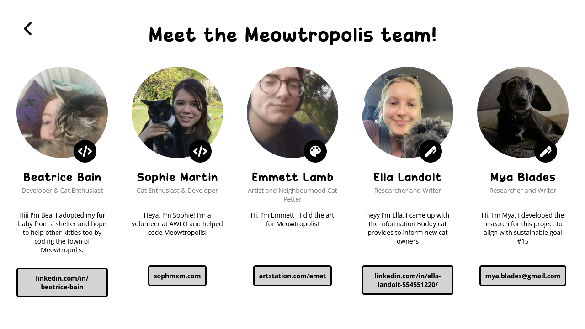
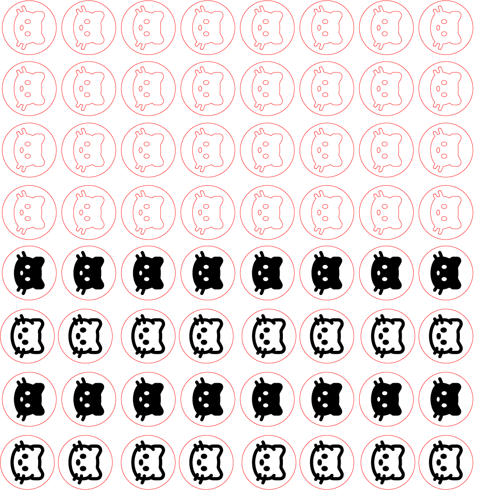
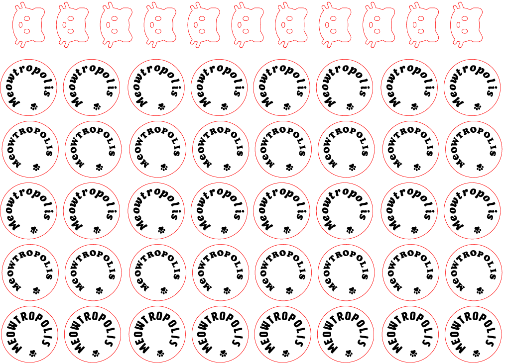
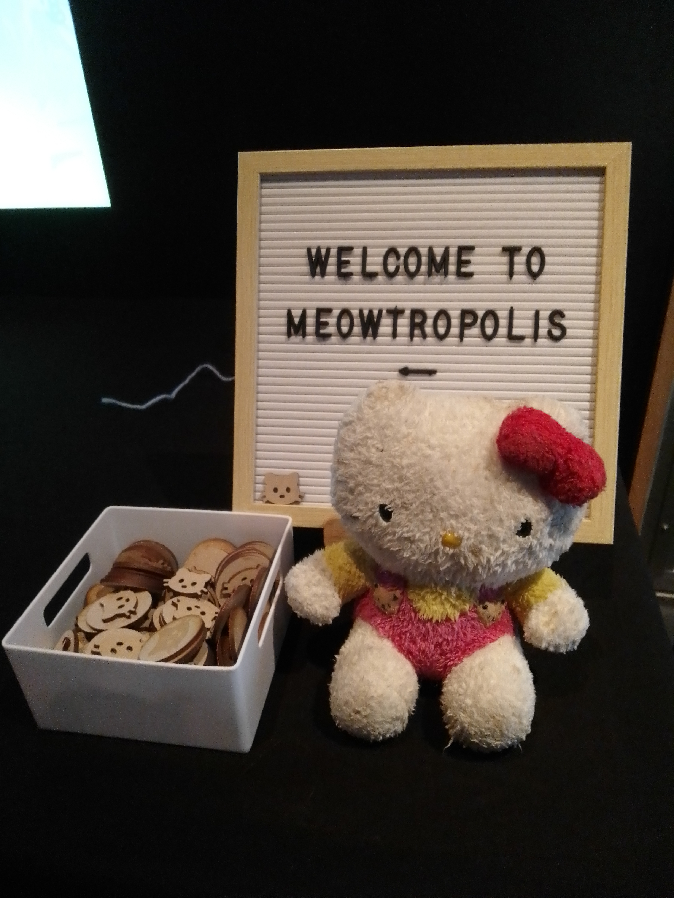
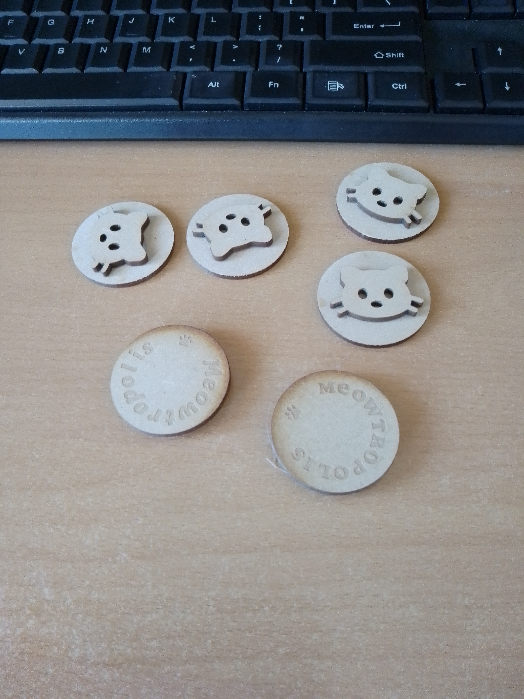

Role: UI/UX designer and programmer
Team: Beatrice Bain, Mya Blades, Emmett Lamb, Ella Landolt, Sophie Martin
Tools: HTML and CSS, JavaScript
Summary of Project
This project is an interactive, graphics-focused website where people can choose and play with a cat of their choice based on real-life cats that need to be adopted from AWLQ.
The website features six cats of different ages, sizes and colours, which can be played with in different locations based on these factors. These spaces include the "Kittengarden", for kittens, "9 Lives Lounge", a gentlemen's club for adult cats and the "Infirmary" for older or unwell cats. The game prompts users to establish a connection with the pets through digital interactions such as "pet", "dress up" and "give treat". It then prompts them to visit the AWLQ website to adopt a cat that fits the same description of the pet they have selected and become attached to.


Objective
Our goal was to address the UN Sustainable Goal 15, Life on Land and promote the adoption of cats in shelters.
Concept and thoughts
I chose to address Goal 15, Life on Land, due to my passion for animals and because of my own commitments as a volunteer at an animal shelter, working closely with cats without homes. Because of that, I wanted to create something using my own creative and technical skill set that could potentially help with cats being adopted and came up with the idea of an interactive website, featuring real cats from the shelter.
My role


The project was showcased at RESHAPE, the Bachelor of Creative Industries Graduate Exhibition!
Process
Pitch
Prior to production, my task was to ideate and pitch an idea that addresses one of the UN Sustainable Goals. Concept images were created in Canva to accompany my pitch, using them as a means of communicating my idea while also noting down the feasibility of the project as well as the required creatives that were needed to make this project.
I also emailed AWLQ's media and communication email, explaining my concept and what it was for, so that I could gain permission to use real-life cats and the information that was publicly provided from their Adopt a Cat webpage.


After our pitches were graded, my project was one of a few that was selected by our tutors to move forward in the process and was assigned four other people to help with the creation of it.

Early development, ideas and meetings
A large team collaborative board was made on Pinterest for our mood board and style inspiration, along with notes of games (such as Purple Place) that we used for inspiration.This was done so that our illustrator could get a sense of what sort of style we wanted for the project and so that the rest of the team was on the same page and give their own input of style.

From there we continued to have in-person scrum meetings, bouncing ideas to each other, aking notes of the sorts of things we wanted to include in this website, and gathering feedback from our tutor and peers. During one early session, I had made some rough wireframes and notes of a basic sitemap and some of the interactions that we could potentially add based on these conversations.


Coding the website
Not long after, myself and our other programmer, Beatrice, started a Github repository so that we could both code at the same time without complications.
Once our illustrator had drawn up and sent in some of their unfinished illustrations, we created some interactive wireframes using the unfinished illustrations in placeholder.
We used these to create area polygon maps of each hoverable area on the main homepage map that would react to any mouse hover events. We had some difficulties coding this to be responsive to any size resolution, as the polygons areas had to strictly follow and conform to the same size and positions as the image itself, but I figured out how to do that with some JavaScript functions and an event listener that updated the calculations upon the window resizing, as well as some CSS to ensure the image resized properly without warping.

Collecting information
Throughout the coding and illustrative process, we needed some cats to display on our website. Since I had already gained permission from AWLQ after emailing them to use their real-life cats information for the project, we all held a meeting to scroll through the AWLQ's official website and select six cats of varying appearances and age to appear on our website.
We collected this information, including their coat colour, breed, age, gender, size, description and any other relevant information, also sending the cat photos to our illustrator to illustrate.

Prop Tokens for the Showcase
Because of another unit that I was in, I had some basic training and access to use the laser cutter on campus. I had found some free svg icons online and added them to an Adobe Illustrator file and laser cut out some thin plywood material. I used my own hot glue gun to glue some of them together.




We handed out the tokens during the RESHAPE Graduate Exhibiton where our project was showcased.